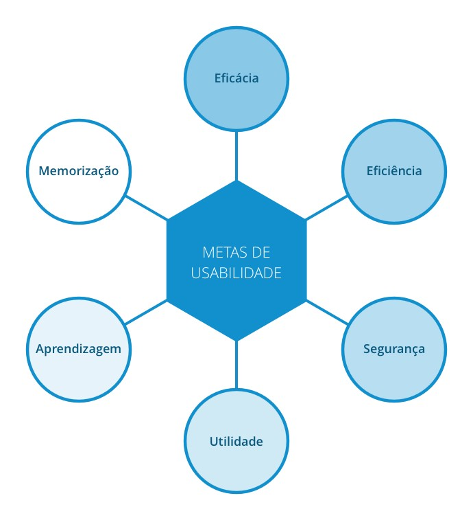

Metas de Usabilidade
Metas de usabilidade ajudam a solucionar preocupações como a produtividade do usuário durante a utilização do sistema e a motivação desse usuário para um aprendizado eficaz. Segundo Jakob Nielsen (1993) exitem 6 metas de usabilidade, que são fatores diretamente ligados ao uso de sistema.
As metas de usabilidade são:
- Eficácia
- Eficiência
- Segurança
- Utilidade
- Aprendizagem
- Memorização

Eficácia
- A eficácia é uma meta bastante geral e se refere a quanto um produto é bom em fazer o
que se espera dele.
- Pergunta: O produto permite que as pessoas aprendam, realizem seu trabalho de forma eficiente, acessem a informação de que necessitam ou comprem os produtos que desejam?
Eficiência
- A eficiência refere-se à maneira como um produto auxilia os usuários na realização de
suas tarefas.
- Pergunta: Os usuários conseguirão manter um alto nível de produtividade, uma vez que tenham aprendido como utilizar um produto para realizar suas tarefas?
Segurança
- A segurança envolve proteger o usuário de condições perigosas e situações indesejáveis.
- Pergunta: Qual é a gama de erros possíveis ao se utilizar o produto e quais as medidas que o produto permite que o usuário tome para corrigir os erros facilmente?
Utilidade
- A utilidade refere-se à medida na qual o produto oferece o tipo certo de funcionalidade,
de modo que os usuários possam fazer aquilo que precisam ou desejam.
- Pergunta: O produto fornece um conjunto adequado de funções que permitam aos usuários realizar todas as suas tarefas da maneira que desejam?
Aprendizagem
- A capacidade de aprendizagem (learnability) refere-se à facilidade de aprender a usar
um sistema.
- Pergunta: O usuário saberá como usar o produto explorando a interface e experimentando determinadas ações? Será difícil aprender todo o conjunto de funções dessa maneira?
Memorização
- A capacidade de memorização (memorability) refere-se à facilidade de lembrar como utilizar um sistema depois de já tê-lo aprendido.
- Pergunta: Que tipos de suporte de interface foram fornecidos com o objetivo de ajudar os usuários a lembrarem como realizar as tarefas, especialmente para produtos e operações que são utilizados com pouca frequência?
Metas para o Estagiarios.com
- Eficácia : O site não permite um aprendizado de forma eficiente. O seu layout, apesar de simples, é um tanto quanto poluído devido principalmente à fonte ser pequena e as informações estarem muito próximas, tornando a distinção do que acessar um pouco confusa;
- Eficiência : Como dito na eficácia, o alto nível de produtividade pode não ser mantido devido à poluição visual do layout, tornando algumas funcionalidades complicadas de serem acessadas mesmo com o usuário sabendo o que quer fazer;
- Segurança : O site permite o usuário sair de situações adversas (como excluir o currículo) de forma simples, já que oferece a opção de cancelar ou confirmar a ação. Além disso, mensagens de erro são exibidas ao informar (ou deixar de informar) campos errados nos formulários e dados de usuário;
- Utilidade : As funcionalidades do site são relativamente simples, porém oferecem ao usuário certa resistência para realizarem as ações da forma que desejam, como etapas desenecessárias para realizar algumas ações, como por exemplo ao pesquisar uma vaga de estágio;
- Aprendizagem : Com um certo tempo de uso, o usuário poderá conhecer facilmente todos as funcionalidades fornecidas pelo site;
- Memorização : Apesar da fácil aprendizagem, algumas ações podem não ser triviais de serem repetidas visto que o layout , como citado na eficácia, é um tanto quanto poluído. Logo, mesmo sabendo o que fazer, o usuário encontrará dificuldades para reencontrar links e funcionalidades já que não possuem uma disposição marcante, e sim características idênticas.
Histórico
| Data | Versão | Descrição | Autor(es) |
|---|---|---|---|
| 13/10/2020 | 0.1 | Criação da versão inicial da página | Nícalo Ribeiro |
| 14/10/2020 | 0.2 | Adição da análise das metas de usuabilidade para o site | Nícalo Ribeiro |
Referências
- As 6 metas de Usabilidade. (2016). Retrieved 12 October 2020, from https://medium.com/uxcaboquinho/as-6-metas-de-usabilidade-9491442fd56a